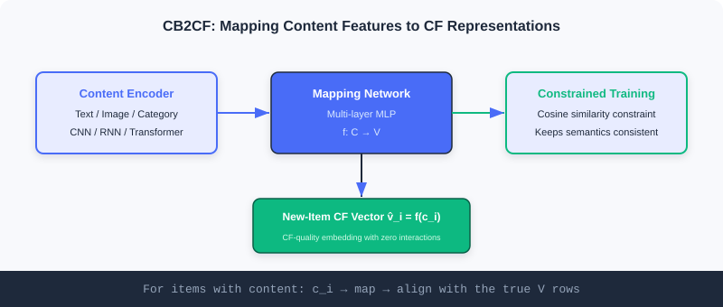
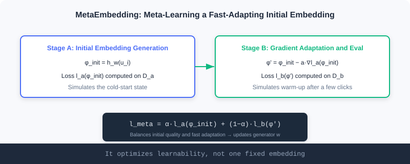
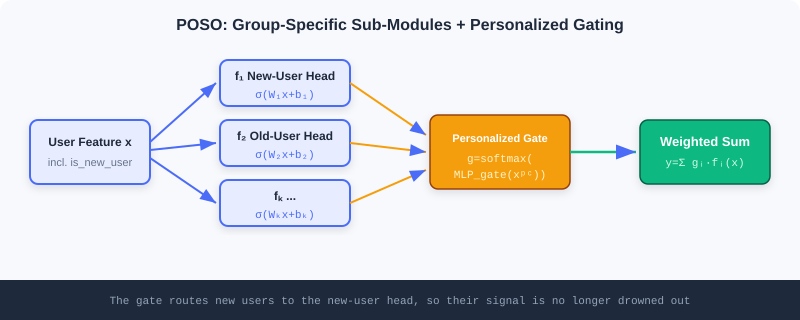

Cold Start
📝 Before You Continue: Make sure you have read collaborative filtering and the two-tower model in Part 2 Retrieval, and the bias perspective in 5.1. Cold start is, at its core, a bias predicament: being asked to be accurate with no history.
A recommender system's most awkward moment is when a new item goes on shelf, or a new user signs up. Collaborative filtering learns preferences from user–item interactions, but at that moment the interactions are zero; content-based methods can handle new items, but often capture only surface similarity.
This is the cold-start problem — the system's core engine (behavioral data) has not fired up yet, but it must immediately output trustworthy recommendations. This chapter splits cold start into two faces: content cold start (new items lack interactions) and user cold start (new users lack history), with two representative solutions for each. Their shared wisdom is borrowing strength: a new item borrows from content, a new user borrows from meta-knowledge or population structure.
After reading this chapter, you will be able to:
- Distinguish the fundamental difference between content cold start and user cold start
- Explain how CB2CF maps content features to collaborative-filtering representations so new items get CF quality directly
- Write down MetaEmbedding's two-stage meta-loss and understand that it optimizes "learnability" rather than a fixed vector
- Explain MeLU's parameter separation and POSO's "personalization submergence" insight, and compare the two
- Work through 4 tiered practice problems to consolidate the engineering and math intuition for cold start
5.2.0 The Two Faces of Cold Start
Cold start is not one problem but two objects each "lacking history":
| Type | What's Missing | Typical Failure | Solution Intuition |
|---|---|---|---|
| 🎬 Content cold start | New items lack user interactions | Collaborative filtering cannot compute similarity for them | Borrow content: map attributes onto existing representations |
| 👤 User cold start | New users lack behavior history | Can only recommend popular items, no personalization | Borrow meta-knowledge/populations: fast adaptation or segmentation |
We take each in turn.
5.2.1 Content Cold Start: Letting New Items "Borrow" Collaborative Quality
Collaborative filtering uncovers complex implicit associations but is helpless with new items; content-based methods handle new items but often capture only surface similarity. The ideal is: new items also get collaborative-filtering-grade representations — exactly the goal of CB2CF and MetaEmbedding.
CB2CF: From Content Features to Collaborative Representations
The core idea of CB2CF (Content-Based to Collaborative Filtering) is to learn a mapping function that maps an item's content features directly into the collaborative-filtering embedding space, yielding .

For items that have both a content description and rich interactions, we hold both their content vector and their CF embedding. CB2CF uses a deep network to learn the nonlinear mapping between the two representations, so a new item obtains a semantically consistent CF representation from content alone. Its multi-view architecture has three modules:
- Content Encoder: encodes multimodal content (text, images, categories) into a unified content vector. CNNs for images, RNN/Transformer for text.
- Mapping Network: the core — stacked fully-connected layers that learn the nonlinear map from content space to CF embedding space, capturing complex content–preference associations.
- Constraint Optimization module: uses a cosine-similarity constraint to keep the mapped representation semantically consistent with the true CF embedding, guaranteeing the mapping is valid.
Where do collaborative vectors come from? For items with interactions, CF vectors can be produced in several ways: matrix factorization , where item 's vector is row of , ; the item-tower output of a two-tower retrieval model; or deep methods like NCF and autoencoders. Once CB2CF has learned , a new item's content passes through to yield .
🧠 Mental Model: The Translator
Think of CB2CF as a translator. CF embeddings are the system's internal lingua franca; established items all speak it. A new item only speaks "content-ese" (text/images). The translator has learned to render content-ese into CF-ese, so even though the new item has never made friends (no interactions), the system understands it the moment it speaks and folds it into the collaborative network.
Analysis: CB2CF's strength is directness — one mapping and a new item instantly holds a CF-grade representation that plugs into existing retrieval/ranking. Its limits: the mapping's quality ceiling is bounded by how transferable "content → CF" is; if content correlates weakly with collaborative signal, the translation distorts. It also assumes existing items' CF vectors are trustworthy (you need a good CF model first).
MetaEmbedding: Meta-Learning "Smart" Initial Embeddings
CB2CF solves "new items can't get a CF representation", but another difficulty remains: even with an initial vector, traditional random initialization makes new items perform poorly early on and need lots of interactions to converge.
MetaEmbedding applies meta-learning to generate embeddings for new items that are both initially high-quality and quick to adapt. It optimizes the generator by simulating each item's full journey "from cold start to warmed up".
Algorithm inputs: a pretrained base model , an item set , meta-loss weight , and step sizes . For each sampled item :
Initial embedding generation stage: the generator produces the initial vector
where is item 's features and is the generator with parameters . Then sample two batches of samples each: and .
Gradient adaptation and evaluation stage: compute the loss on the first batch and take one gradient-adaptation step, simulating "after a few interactions":
Then evaluate the adapted loss on the second batch.

The key is the meta-loss balancing two objectives:
Finally, update the generator with the meta-losses of all sampled items:
💡 Key Insight: MetaEmbedding optimizes an embedding's "learnability", not the embedding itself. By repeatedly rehearsing "initialize → adapt → evaluate" on established items, it learns to give new items a "smart starting point" — one that converges to a high-quality representation after only a few real interactions.
🧠 Mental Model: Teaching "How to Learn" Instead of "Memorizing Answers"
MetaEmbedding is like a coach who doesn't hand a rookie the match answers, but trains him in "how to warm up before going on court and how to adjust through the first few plays". When the real match comes, he hits his stride after just a few real exchanges. weighs "is the opening stance good" against "how strong is he after fine-tuning".
5.2.2 User Cold Start: Fast Personalization for New Users
A newly registered user has no interaction history, so collaborative filtering can only serve generic popularity-based recommendations. User cold start focuses on: how to capture personalized preferences quickly from a few behaviors. MeLU and POSO offer two approaches — meta-learning and segmentation architecture.
MeLU: Learning Each User as a Separate Task
MeLU (Meta-Learned User preference estimator) treats each user's preference learning as an independent task, and uses MAML (Model-Agnostic Meta-Learning) to train a model that adapts quickly to new users. MAML's essence is "learning how to learn" — rather than being optimal on one task, it learns a good initialization such that a few samples suffice to adapt to a new task.
MeLU uses two tiers of parameters:
- governs the embedding parameters for users and items (shared by all users)
- holds the parameters of the model's core decision network (adapts quickly to each individual)
Training strictly follows MAML's two loops:
- Inner-loop adaptation: for each user , compute gradients from their interaction history and update locally: .
- Outer-loop meta-update: using all users' adapted parameters, update both sets of global parameters simultaneously:
MeLU's innovation is parameter separation: learns shared general representations while specializes in fast per-user adaptation. This retains representation capacity while personalizing quickly for new users. MeLU also proposes an evidence candidate selection strategy that picks the set of items most discriminative of user preferences for cold-start evaluation.
Analysis: MeLU's advantage is theoretical elegance — a new user gets personalized after a few gradient steps, no retraining from scratch. The costs: MAML's second-order gradients are computationally heavy, and it relies on the assumption that users' tasks are identically distributed; when new and old users' behavior distributions differ hugely, fast adaptation alone may not suffice.
POSO: Fighting "Personalization Submergence" with Segmented Submodules
POSO (Personalized cOld Start Modules) attacks from the architecture angle with a sharper insight: the root cause of user cold start is not just data scarcity, but the huge distributional gap between new and old users' behavior, plus the model's "submergence" when facing imbalanced distributions — when new users are far outnumbered by old ones, even with an "is new user" feature, training is dominated by the old-user majority. The model learns to ignore this heavily imbalanced feature, and the new users' personalization signal drowns.

POSO embeds into many module types; take the MLP as an example. The original MLP shares weights across all users, ; POSO introduces parallel submodules , plus a personalized gating network (taking such as is_new_user and activity level) that outputs weights . The final output is the weighted combination:
New users then rely mainly on "the submodule optimized for them" while old users use another set, effectively avoiding feature submergence. The idea extends to:
- POSO-MHA: extends to groups of attention heads, each with dedicated transforms, concatenated and aggregated within each group; gating selects group weights by user features.
- POSO-MMoE: shared experts at the bottom + expert groups at the top ( experts per group), stacking task gating and personalized gating for dual personalization at both the task level and the user-segment level.
🧠 Mental Model: Multiple Service Desks vs a Single Clerk
An ordinary model is like a single clerk serving all customers at once: biased toward the regulars' (old users') habitual requests, with newcomers' (new users') special needs drowned out. POSO is like opening dedicated desks: newcomers go to the "newcomer desk", regulars to the "regulars desk", and a greeter at the door (the gate) routes customers by type — newcomers' needs can never be shouted down by the regulars' volume.
Analysis: POSO and MeLU are complementary. MeLU assumes "all users are identically distributed; rely on fast adaptation" and suits scenarios with similar behavior patterns; POSO directly targets "imbalanced distributions causing feature submergence" and forces the split structurally — easier to integrate into off-the-shelf deep modules (MLP/MHA/MMoE) and free of meta-learning's heavy gradients. In practice they combine: use POSO's structure to keep cold start from being submerged, and meta-learning to further accelerate convergence.
⚠️ Common Mistakes in 5.2
| # | Mistake | Example | Why It's Wrong | Fix |
|---|---|---|---|---|
| 1 | Randomly initializing new-item embeddings | A new item enters the model with a random vector | Poor early performance; needs many interactions to converge | Use MetaEmbedding to generate a smart starting point |
| 2 | Mistaking content similarity for collaborative similarity | CB2CF relies only on text similarity | Surface similarity ≠ behavioral collaboration; the mapping distorts | Use constraint optimization to keep semantics consistent |
| 3 | Assuming MAML always beats structural design | Reaching for MeLU reflexively for user cold start | Insufficient adaptation when behavior distributions differ, plus heavy second-order gradients | Prefer POSO's structural split under imbalance |
| 4 | Assuming one new-user feature is enough | Adding only an is_new_user flag | Old users dominate training and the feature gets submerged | Use POSO submodules + gating to force the split |
Chapter Summary
📌 Key Takeaways
| Concept | Key Points | Why It Matters |
|---|---|---|
| Content cold start | New items lack interactions; CF fails | Borrow content mappings to obtain CF representations |
| CB2CF | , content→CF | New items gain collaborative quality instantly |
| MetaEmbedding | Two-stage meta-loss optimizing "learnability" | Generates initial vectors that adapt quickly |
| User cold start | New users lack history; only popular items can be recommended | Borrow meta-knowledge/population structure for fast personalization |
| MeLU / POSO | Meta-learned adaptation / segmented submodules against submergence | Two complementary user cold-start approaches |
❓ FAQ
Q1: Do CB2CF and MetaEmbedding solve the same problem?
A: Not quite. CB2CF solves "new items cannot obtain a CF representation"; MetaEmbedding solves "even with an initial vector, random initialization converges slowly". They can chain: MetaEmbedding generates a good starting point, then a CB2CF-style mapping supplies CF quality.
Q2: Why is POSO more effective than just adding an is_new_user feature?
A: Because training is dominated by old users, a lone feature gets "submerged" — the model learns to ignore it. POSO uses dedicated submodules plus gating to structurally force new users through their own pathway, which cannot be ignored.
Q3: How to choose between MeLU and POSO?
A: If user behavior patterns are similar and few samples suffice to adapt → MeLU; if new/old user distributions differ greatly and features are easily submerged → POSO. They can also be combined.
Connections to Later Chapters
- 5.1 (debiasing): long-tail new items get little exposure and are easily drowned by popularity bias; cold start and debiasing must work in concert.
- 5.3 (generative): semantic IDs let new items be recommended without any behavior, easing content cold start at the representation level.
- Part 2 Retrieval (Ch2.x): the CF representations produced by CB2CF plug directly into two-tower/vector retrieval.
Practice Problems
Work through all problems in order — they get progressively harder. Each has a complete solution you can reveal after trying it yourself.
Problem 5.2.1 — Distinguishing Cold-Start Types 🟢 Easy
Is each scenario below content cold start or user cold start?
- (a) A newly launched documentary with no play records needs to be retrieved.
- (b) A freshly registered user has tapped only 3 videos, yet the system keeps recommending popular content.
- (c) A newly released song should go straight into personalized playlists, not just the "New Releases" list.
💡 Solution (click to reveal)
Approach: Ask whether what's missing is item history or user history.
- (a) Content cold start: the item has no interactions; collaborative filtering fails.
- (b) User cold start: the user lacks history; only popular items can be recommended.
- (c) Content cold start: the new song (item) lacks behavior and wants to enter personalization by borrowing content.
Key points:
- The "subject" of content cold start is a new item; of user cold start, a new user.
- Their solutions differ: items borrow content mappings; users borrow meta-learning/segmentation.
Problem 5.2.2 — Filling In the CB2CF Mapping 🟢 Easy
CB2CF learns a mapping function that maps a new item's content features into the collaborative-filtering space. Complete the output expression and explain the role of the constraint optimization module.
💡 Solution (click to reveal)
Approach: Recall CB2CF's three modules and the mapping definition.
The mapping output is:
where is realized by the mapping network (stacked fully-connected layers). The constraint optimization module applies a cosine-similarity constraint to keep semantically consistent with the true CF embedding — otherwise the mapping might "appear to converge" while drifting away from the collaborative space, causing new items to be wrongly recommended.
Key points:
- A new item has no interactions, yet its content through yields a CF representation.
- Constraint optimization is what guarantees the mapping works; do not skip it.
Problem 5.2.3 — Interpreting the MetaEmbedding Meta-Loss 🟡 Medium
MetaEmbedding's meta-loss is . Explain: (1) what do the two terms each measure? (2) What happens if ? (3) Why is it said to optimize "learnability" rather than the embedding itself?
💡 Solution (click to reveal)
Approach: Decompose the meta-loss against the two-stage process.
(1) measures the initial embedding's direct quality on the first batch (cold-start opening performance); measures quality after one gradient-adaptation step (adaptation performance after a few interactions).
(2) If , only remains; the generator optimizes initial quality only and no longer cares about "can it adapt quickly" — new items get a good starting point but are hard to fine-tune, defeating the purpose of fast cold-start convergence.
(3) It does not fix a dead vector for a specific item; instead it repeatedly rehearses "initialize → adapt → evaluate" on many established items, learning to generate starting points with good initial performance and strong adaptation potential. Faced with a real new item, that starting point converges quickly with a little real data — what's optimized is "how learnable it is".
Key points:
- balances "opening" against "adaptation".
- Meta-learning = learning how to learn, not learning a fixed answer.
Problem 5.2.4 — Designing a POSO Retrofit 🔴 Hard
You have a weight-shared MLP ranking model. Online, recommendations for new users perform far worse than for old users, even though an is_new_user feature has been added. Propose a retrofit following the POSO-MLP approach: write out the mathematical form of the submodules and the gate, and explain why this solves "feature submergence".
💡 Solution (click to reveal)
Approach: Follow POSO-MLP's three-part retrofit.
Submodules: introduce parallel MLP submodules, each with independent weights:
Gate: the personalized gate takes (including is_new_user, activity level, etc.) and outputs per-submodule weights:
Final output: the weighted combination of all submodules:
Why it solves submergence: in the original model all users share , training is dominated by old users, and the lone is_new_user feature is easily learned to be "ignored". POSO routes new users mainly through "new-user-dedicated submodules" and old users through another set, structurally guaranteeing new users' personalization signal a dedicated pathway that the old users' volume cannot drown.
Key points:
- The key is "structural routing", not "adding features".
- The gate dynamically allocates submodule weights by user features, smoothly transitioning between new and old users.
🏆 Challenge: A Cold-Start Combo
A short-video app faces both at once: new creators' content (content cold start) and newly registered users (user cold start). Write a plan of at most 200 words explaining how you would combine CB2CF / MetaEmbedding / POSO to address each, and identify which step depends most on "the quality of existing items' CF vectors".
💡 Hint
- New creators' content: use MetaEmbedding to generate a smart initial embedding, then borrow a CB2CF-style content→CF mapping to obtain a collaborative representation and plug into retrieval.
- Newly registered users: use POSO submodules + gating for structural routing so
is_new_userisn't submerged; with a few behaviors available, stack MeLU-style fast adaptation on top. - The step most dependent on "existing items' CF vector quality" is CB2CF — its constraint optimization needs trustworthy true CF embeddings as alignment targets; if the underlying CF model is poor, the mapping distorts too.